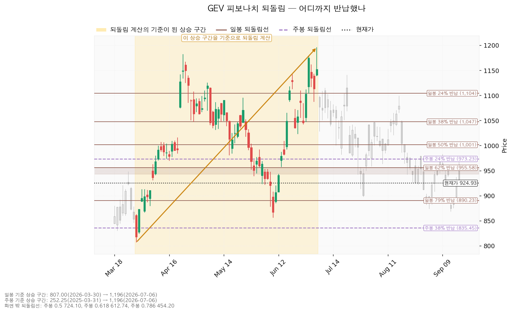
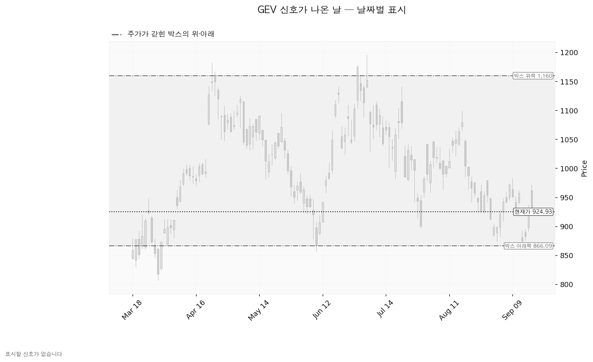
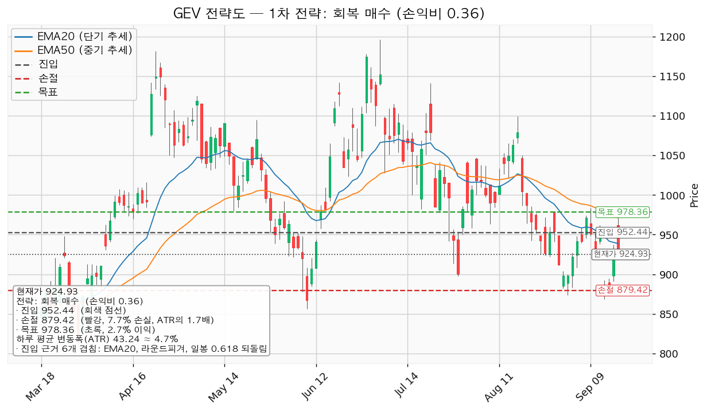
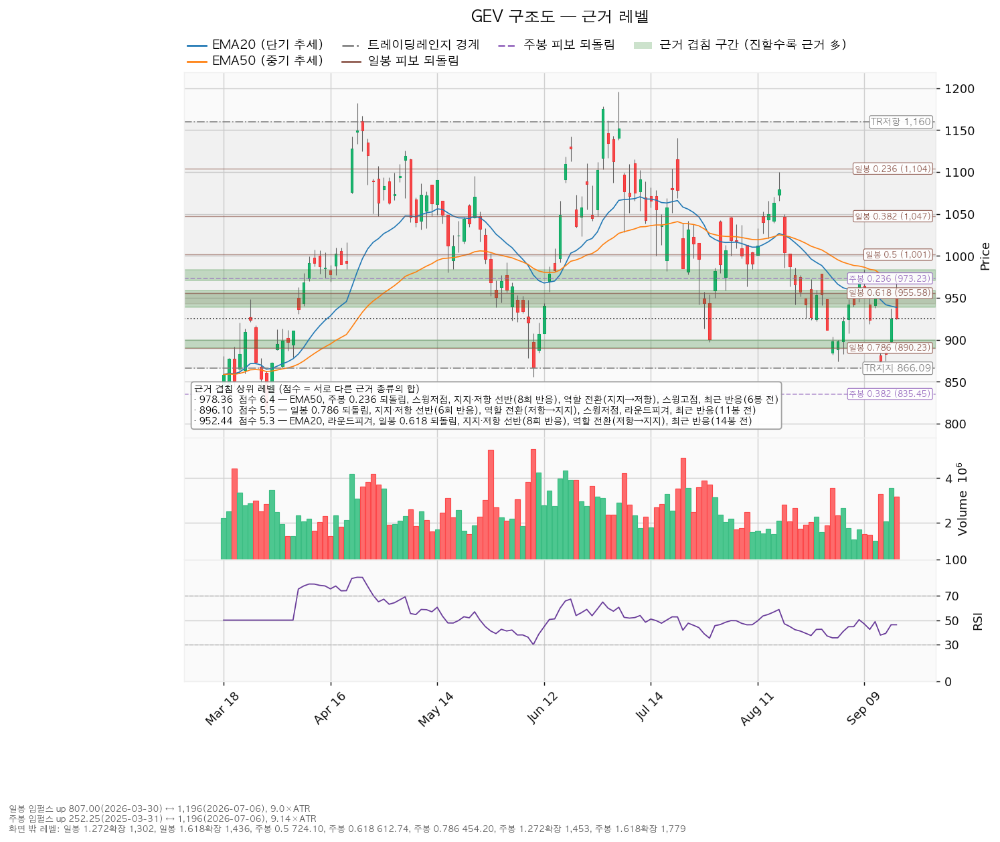

GE Vernova(GEV)는 GE에서 분리된 미국 전력 설비 회사로, 가스·풍력 발전 터빈과 송배전 전력망 장비를 만들고 유지보수 서비스를 제공합니다.
| 구분 | 가격 | 어떻게 판정하는가 | 현재 상태 | 현재가 대비 |
|---|---|---|---|---|
| 회복선 (진입 조건) | 952.44달러 | 일봉 종가로 회복한 뒤 되돌림에서 지지되는지까지 확인 | 회복 대기 | +2.97% (0.64 ATR) |
| 집행 손절 | 879.42달러 | 저가가 닿으면 청산 — 보유 1주에만 유효하며, 신규 진입을 하지 않으므로 그 외에는 의미가 없습니다 | 보유 1주에 대해 유효 | -4.92% (1.05 ATR) |
| 관망 종료 기준 | 890.23달러 또는 2026-10-28 실적 | 일봉 종가로 890.23달러(아래쪽 겹침 구간 하단)를 잃으면 회복 대기 자체를 내립니다 | 유지 중 | -3.75% (0.80 ATR) |
| 확인선 (상승 확정) | 978.36달러 | 일봉 종가 돌파 후 되돌림 지지 확인 | 미돌파 | +5.78% (1.24 ATR) |
| 폐기선 (구조) | 866.09달러 | 이탈 후 3거래일 내 종가 회복 실패(또는 그 전에 822.85달러 아래 종가 마감) + 반등에서 저항으로 확인 | 유지 중 | -6.36% (1.36 ATR) |
폐기선 866.09달러는 현재가에서 1.36 ATR 떨어져 있습니다. 하루치 움직임의 한 배 반 안쪽이므로 실무에서 작동하는 거리이며, 별도의 논지 무효화 조건(맨 아래)은 그것과 별개로 겁니다.
확인선 978.36달러는 대표 셋업의 목표와 같은 가격입니다. 모순이 아니라 분기입니다 — 여기서 막히고 되밀리면 그게 목표였던 것이고, 일봉 종가로 넘기면 상승 확정이며 그때는 이 포지션의 연장이 아니라 새 셋업으로 다시 잡습니다. 박스 상단 1,159.64달러는 그 위의 맥락으로만 적습니다.
| 직전이 건 조건 | 판정 |
|---|---|
| 회복선 898.84달러 일봉 종가 회복 | 충족 — 2026-09-16 종가 925.09달러 |
| 충족 이후 목표 976.20달러 고가 터치 | 미도달 — 2026-09-17 고가 971.34달러까지 올라갔다가 종가 924.93달러로 되밀렸습니다. 목표까지 4.86달러(0.11 ATR) 남았습니다 |
| 충족 이후 집행 손절 863.49달러 저가 터치 | 미도달 — 이후 최저 저가는 2026-09-16의 890.99달러입니다 |
| 관망 종료 기준 874.00달러 종가 이탈 | 미발생 |
| 폐기선 875.90달러 종가 이탈 | 미발생 |
| 경고 이탈선 856.82달러 / 폐기 가속선 833.88달러 | 미발생 |
진입 조건은 충족됐고, 그 뒤 목표와 손절 어느 쪽에도 닿지 않은 채 두 거래일이 지났습니다. 9월 17일은 시가 962.04달러로 출발해 971.34달러까지 올라갔다가 924.93달러로 마감했습니다 — 목표 겹침 구간(971.13~983.34달러) 안까지 장중에 들어갔다가 그날 안에 전부 반납한 움직임입니다.
| 항목 | 2026-09-16 | 2026-09-18 | 이동 |
|---|---|---|---|
| 기준 현재가 | 882.81달러 | 924.93달러 | +4.77% |
| 회복선 | 898.84달러 | 952.44달러 | +53.60달러 |
| 집행 손절 | 863.49달러 | 879.42달러 | +15.93달러 |
| 관망 종료 기준 | 874.00달러 | 890.23달러 | +16.23달러 |
| 확인선 / 목표 | 976.20달러 | 978.36달러 | +2.16달러 |
| 폐기선 | 875.90달러 | 866.09달러 | -9.81달러 |
| 하루 평균 변동폭(ATR) | 42.02달러 | 43.24달러 | +1.22달러 |
| 대표 셋업 손익비 | 1:2.19 | 1:0.36 | 진입~목표 폭 77.36달러 → 25.92달러 |
왜 움직였는지 적습니다. 가격이 이틀 만에 +4.77% 오르면서 현재가 위에서 가장 가까운 겹침 구간이 897.68~900.00달러에서 938.72~958.95달러(EMA20 + 라운드피겨 950 + 일봉 0.618 되돌림 + 8회 반응 선반, 5.3점)로 한 칸 올라갔습니다. 회복선은 그 구간의 중심값이므로 898.84달러에서 952.44달러로 옮겨갔습니다. 손절도 같은 이유로 한 칸 올라가 890.23~900.00달러 구간 아래인 879.42달러가 됐습니다.
목표는 2.16달러밖에 움직이지 않았습니다. 목표 겹침 구간을 이루는 EMA50이 974.76달러에서 971.13달러로 계속 내려오는 중이고, 그 구간의 선반(8회 반응)과 주봉 0.236 되돌림(973.23달러)은 제자리이기 때문입니다. 진입이 53.60달러 올라가고 목표가 2.16달러만 올라갔으므로 둘 사이 폭이 77.36달러에서 25.92달러로 줄었고, 손익비가 2.19에서 0.36으로 내려앉았습니다.
폐기선은 직전에도 이번에도 90일 박스의 하단이며, 박스가 다시 계산되면서 875.90달러에서 866.09달러로 내려왔습니다. 9월 14일 저가 868.25달러가 새 지지 테스트로 들어온 것이 반영된 값입니다.
바뀌었습니다. 직전은 "898.84달러 회복 시 진입"이었고 이번은 패스입니다. 바뀐 이유는 회복 조건이 틀렸기 때문이 아니라 그 조건이 충족되면서 가격이 목표 근처까지 올라갔다가 되밀려, 새로 계산된 진입 자리와 목표 사이에 남은 폭이 하루 평균 변동폭의 0.60배로 줄었기 때문입니다. 직전 리포트에 오류는 없었습니다 — 직전이 건 회복선은 충족됐고, 그 뒤 목표까지 4.86달러를 남기고 되밀린 것이 이번 결론을 만든 사실입니다.
한 가지가 직전과 달라졌습니다. 직전에는 현재가 추격이 비권장이었지만(회복선이 현재가 위에 있는데 진입가가 현재가와 1.82% 차이로 붙어 있었습니다), 이번에는 추격 여부를 따질 자리가 없습니다. 회복선 952.44달러가 현재가보다 2.97% 위에 있고 진입은 그 가격의 종가 회복이 조건이므로, 지금 살 계획 자체가 없습니다.
9월 11일 리포트에서 지적했던 구조가 한 번 더 반복됐다는 점도 기록해 둡니다. 당시에도 회복선은 충족됐는데 그 위 저항까지 폭이 0.57 ATR로 줄어 손익비 0.31로 패스했습니다. 이번은 0.60 ATR·손익비 0.36이며, 세 리포트 연속으로 회복은 되는데 그 위 저항을 넘지 못하는 상태입니다.
| 항목 | 값 |
|---|---|
| 현재가 (2026-09-17 종가) | 924.93달러 |
| 20일 평균선 (EMA20) | 938.72달러 — 현재가가 -1.47% 아래 |
| 50일 평균선 (EMA50) | 971.13달러 — 현재가가 -4.76% 아래 |
| RSI(14) — 최근 상승·하락 폭의 균형을 0~100으로 나타낸 지표 | 46.2 (중립 구간) |
| 하루 평균 변동폭 (ATR) | 43.24달러 = 주가의 4.67% |
| 추세 / 국면 | 하락 추세 · 횡보 레인지(구조 유지 — 하단 사수 조건부) |
| 7월 6일 고점(1,195.94달러) 대비 | -22.66% |
가격은 20일선과 50일선 둘 다 아래에 있고, 두 평균선의 순서도 아래를 향하고 있습니다(20일선 938.72달러 < 50일선 971.13달러). 다만 RSI 46.2는 어느 쪽으로도 기울지 않은 값입니다.
엔진은 40·90·180봉 세 창을 모두 시험한 뒤 90봉(약 4개월반) 창을 골랐습니다. 조회된 일봉은 621개입니다.
| 창 | 가격이 박스 안에 머문 비율 | 한쪽으로 쏠린 정도 | 박스 폭 |
|---|---|---|---|
| 40봉 | 90.0% | 0.409 | 3.78 ATR |
| 90봉 (채택) | 98.9% | 0.151 | 6.79 ATR |
| 180봉 | 95.6% | 0.451 | 11.94 ATR |
90봉 창이 가격을 가장 잘 담고(98.9%) 방향 쏠림이 가장 작아(0.151) 채택됐습니다. 박스는 866.09~1,159.64달러이며, 현재가 924.93달러는 하단에서 20% 지점입니다.
박스 안쪽을 무엇으로 판정했는가. 박스 모양만으로는 매집인지 재분산인지 알 수 없으므로 안쪽 거래량과 저점 흐름을 봅니다.
| 관측 항목 | 값 |
|---|---|
| 지지 테스트 기록 | 2026-06-10 저가 856.01달러(평소 거래량의 2.02배) → 07-29 897.68달러(1.24배) → 09-01 874.00달러(1.15배) → 09-14 868.25달러(1.58배) |
| 지지 테스트 거래량 추세 | 감소 — 지지를 시험할 때마다 매도 물량이 줄었습니다 |
| 박스 내 저점 | 절하 — 856.01 → 897.68 → 874.00 → 868.25로 최근 세 번이 아래를 향합니다 |
| 상승봉 대 하락봉 거래량비 | 0.97 — 아직 어느 쪽으로도 기울지 않았습니다 |
| 종합 판정 | 중립 (매집 우위도 재분산 우위도 아님) |
직전 구간에서 어느 방향으로 들어왔는가. 이 박스 직전의 구간은 657.04~1,045.90달러였고, 가격은 그 구간을 위로 뚫고 올라와 지금 박스로 들어왔습니다. 위에서 내려온 것이 아니라 아래에서 올라온 자리이므로, 재축적(다시 모으는 중)일 수도 분산(내보내는 중)일 수도 있는 갈림길입니다. 지지 테스트 거래량은 줄고 있으나 저점이 절하되고 있어 두 근거가 서로 반대를 가리키며, 그래서 판정이 중립에 머물러 있습니다.
박스 안쪽이 매집 우위가 아니라 중립이므로 지지 확인 매수 셋업은 이번에도 산출되지 않았습니다.
일봉 기준 되돌림은 807.00달러(2026-03-30) → 1,195.94달러(2026-07-06) 상승 구간을 기준으로 계산됐습니다. 이 구간의 길이는 하루 평균 변동폭의 9.0배입니다.
| 되돌림선 | 가격 | 현재가와의 관계 |
|---|---|---|
| 24% 반납 | 1,104.15달러 | 위 |
| 38% 반납 | 1,047.36달러 | 위 |
| 50% 반납 | 1,001.47달러 | 위 |
| 62% 반납 | 955.58달러 | 위 — 회복선 겹침 구간의 구성 요소 |
| 현재가 924.93달러 | — | 69.7% 반납 지점 |
| 79% 반납 | 890.23달러 | 아래 — 관망 종료 기준과 같은 가격 |
주봉 기준 되돌림은 252.25달러(2025-03-31) → 1,195.94달러(2026-07-06) 구간이며, 현재가는 이 구간의 28.7%를 반납한 자리입니다. 주봉 24% 되돌림선 973.23달러가 확인선 겹침 구간 안에 들어 있고, 주봉 38% 되돌림선은 835.45달러로 폐기선 아래에 있습니다. 일봉·주봉 되돌림 계산은 둘 다 정상적으로 산출됐습니다.

신호로 잡힌 날이 하나도 없습니다. 속임수 하락(spring)·속임수 상승(upthrust)·강세 신호(SOS)·약세 신호(SOW) 어느 것도 산출되지 않았습니다. 9월 14일 저가 868.25달러가 박스 하단 866.09달러를 건드린 뒤 되올라온 움직임이 있었으나, 속임수 하락으로 인정될 조건에는 미치지 못했습니다. 국면 후보는 하락 국면(markdown)으로 나왔습니다 — 하락 추세에 평균선 순서가 아래를 향하고 기울기가 음수라는 근거이며, 박스 안쪽 판정은 중립이므로 이 후보를 확정으로 읽지 않습니다.

952.44달러를 일봉 종가로 회복한 뒤 그 위에서 지지되고, 이어서 978.36달러를 일봉 종가로 돌파하는 경로입니다. 구조로는 속임수 하락 확인 → 강세 신호 → 되돌림 지지 → 상승 국면 순서가 됩니다.
행동: 이번 리포트는 952.44달러 회복만으로는 진입하지 않습니다(손익비 0.36이라 패스). 978.36달러를 일봉 종가로 넘기면 그때 새 셋업으로 다시 계산합니다. 그 위 다음 저항은 1,099.66달러(겹침 3.9점 — 6회 반응 선반, 스윙고점 1,099.66, 일봉 24% 되돌림)이며, 978.36달러에서 그 가격까지는 121.30달러(2.81 ATR)가 열려 있습니다. 같은 돌파가 확인되면 손익비가 성립할 폭이 생깁니다.
866.09달러를 지키면서 978.36달러 아래 박스에 머무는 경로입니다. 구조가 유지되는 상태이며, 매물을 소화하는 데 시간이 필요한 국면입니다. 부정적인 신호가 아닙니다 — 90봉 동안 가격이 98.9% 이 박스 안에 머물렀다는 것 자체가 이 구간이 지켜지고 있다는 기록입니다.
행동: 신규 진입을 보류하고 아래 세 가지를 추적합니다.
| 추적 항목 | 현재 관측 | 어느 쪽으로 가면 ①로 기우는가 |
|---|---|---|
| 지지 테스트 거래량 | 감소 (2.02배 → 1.24배 → 1.15배 → 1.58배) | 다음 지지 테스트가 평소 거래량의 1.15배 아래에서 끝나면 매도 압력이 더 줄어든 것 |
| 박스 내 저점 | 절하 (856.01 → 897.68 → 874.00 → 868.25) | 다음 저점이 868.25달러 위에서 형성되면 절상으로 전환 |
| 상승봉 대 하락봉 거래량비 | 0.97 | 1.0을 넘어 올라가면 오르는 날 거래량이 더 실린 것 |
저점 절하가 절상으로 바뀌면 ①로 기웁니다. 세 항목이 그대로인 채 890.23달러를 종가로 잃으면 관망 자체를 내리고, 866.09달러를 잃으면 ③으로 넘어갑니다.
866.09달러를 이탈한 뒤 3거래일 안에 종가로 회복하지 못하거나, 그 전에 822.85달러 아래로 종가 마감하고, 이후 반등에서 866.09달러가 저항으로 확인되는 경로입니다. 이때는 매집이 아니라 재분산이었다는 뜻이고 추가 저점 갱신 가능성이 열립니다. 보유 1주를 정리하고 새 매도 절정과 새 박스가 만들어질 때까지 관망합니다.
폐기선 아래에서 다음으로 받칠 만한 가격대는 835.45~856.01달러(겹침 3.8점 — 주봉 38% 되돌림 835.45, 라운드피겨 850, 스윙저점 856.01, 3봉 전 반응)입니다. 866.09달러에서 이 구간 상단까지는 10.08달러(0.23 ATR)뿐이므로, 폐기선을 잃으면 곧바로 이 구간에서 다시 지지 여부를 확인하게 됩니다.
산출된 셋업은 회복 매수 하나입니다. 하락 추세 + 횡보 국면이므로 되돌림 저가매수는 산출되지 않으며, 개별 종목에 매도 셋업은 제시하지 않습니다. 지지 확인 매수도 나오지 않았는데, 박스 안쪽 성향이 매집 우위가 아니라 중립이기 때문입니다.
| 항목 | 값 |
|---|---|
| 이름 / 방향 | 회복 매수 · 롱 |
| 구조 증명도 | 회복 확인형 (가중치 1.0) — 저항을 종가로 되찾은 뒤에만 진입. 진입가는 불리해지지만 구조가 먼저 증명됩니다 |
| 엣지의 종류 | 모멘텀 |
| 전제 | 저항을 종가로 되찾으면 그 방향이 이어진다 |
| 성격 | 자주 틀리고 소수가 크게 맞는 유형입니다. 승률을 기대하는 셋업이 아닙니다 (이 유형의 일반적 성격이며, 이 엔진에서 측정한 값이 아닙니다) |
| 진입 | 952.44달러 (현재가 +2.97%, 하루 변동폭의 0.64배 위) |
| 손절 | 879.42달러 — 겹침 구간(890.23~900.00달러) 바로 아래 |
| 손절 폭 | 진입가 대비 -7.67%, 하루 평균 변동폭의 1.69배 |
| 목표 | 978.36달러 (진입 대비 +2.72%, 하루 변동폭의 0.60배) |
| 손익비 | 1:0.36 (손절 폭 1.69 ATR 기준) — 손절이 이미 겹침 구간 아래에 놓인 구조 손절이라 별도의 구조적 손절 기준 손익비는 산출되지 않았습니다. 0.36은 손절을 조여서 만든 값이 아니라 구조 손절 그대로의 값입니다 |
| 진입 근거 겹침 | 6개 · 5.3점 — EMA20(938.72), 라운드피겨 950, 일봉 62% 되돌림(955.58), 지지·저항 선반(8회 반응), 역할 전환(저항→지지), 최근 반응(14봉 전). 구간 938.72~958.95달러 |
| 목표 근거 겹침 | 7개 · 6.4점 — EMA50(971.13), 주봉 24% 되돌림(973.23), 스윙저점, 지지·저항 선반(8회 반응), 역할 전환(지지→저항), 스윙고점(983.34), 최근 반응(6봉 전). 구간 971.13~983.34달러 |
| 청산 | 목표 978.36달러에서 전량. 트레일링을 걸지 않습니다 |
| 분할 청산 | 없음 — 진입과 목표 사이에 중간 레벨이 산출되지 않아 분할 없이 단일 목표입니다. 전 구간 손익비도 0.36이며, 본전 스탑으로 옮길 중간 단계가 없어 하한 손익비는 산출되지 않았습니다 |
| 현재가 추격 | 해당 없음 — 진입 조건이 현재가보다 2.97% 위의 종가 회복이므로 지금 살 계획 자체가 없습니다 |
| 이 셋업의 평가 | 패스 — 손익비 0.36으로 1 미만이고 매력 없음·보류로 분류됐습니다. 집행하지 않습니다 |

산출된 셋업이 하나뿐이라 비교 대상은 없습니다. 선정 근거는 손익비 0.36 × 구조 증명도(회복 확인형, 가중치 1.0) × 근거 겹침 5.3점이며, 손익비 하나로 고른 값이 아닙니다.
진입 근거는 직전 리포트(2.3점)보다 두꺼워졌습니다 — 938.72~958.95달러 구간은 20일 평균선, 950달러 라운드피겨, 일봉 62% 되돌림, 8회 반응한 선반, 저항이 지지로 바뀐 자리가 한곳에 모인 5.3점 구간입니다. 진입 자리의 질은 좋아졌고, 패스의 이유는 그 위 목표까지 남은 폭이 25.92달러(0.60 ATR)로 줄어든 데 있습니다.
이 셋업은 모멘텀 전제(저항을 종가로 되찾으면 그 방향이 이어진다)에 고정 목표(978.36달러 전량 청산)가 붙어 있습니다. 엔진이 함께 낸 집행 방침은 "진입 근거는 모멘텀이지만 집행은 레인지 규칙을 따른다 — 손절은 구조 아래, 목표에서 전량 청산이며 트레일링은 걸지 않는다. 돌파 이후 구간은 이 포지션의 연장이 아니라 새 셋업으로 다시 잡는다"입니다. 이번에는 이 조합의 정합성 경고가 따로 붙지 않았고, 어차피 손익비 0.36으로 집행하지 않으므로 대안 판본을 나열하지 않습니다.
진입에서 목표까지가 0.60 ATR로 하루 평균 변동폭의 2배에 못 미칩니다(2배는 관행적 기준이지 정설이 아닙니다). 따라서 트레일링이나 다단 청산을 권할 폭이 아니며, 집행한다 해도 단일 청산으로 끝날 자리입니다.
하루 평균 변동폭이 주가의 4.67%로 8% 기준 아래이고, 손절 폭 7.67%는 그보다 넓은 1.69 ATR입니다. 논지와 무관한 하루치 흔들림으로 손절이 체결될 구조는 아닙니다. 이 셋업의 문제는 손절 쪽이 아니라 목표 쪽 폭입니다.
집행하지 않으므로 신규 비중은 0입니다. 참고로 엔진이 산출한 값은, 한 번의 매매에서 계좌의 1%를 잃는 것을 한도로 하면 손절 폭 -7.67%가 정하는 포지션 크기가 계좌의 13.04%이고 한 종목 상한 13%에 걸려 13%로 제한되는 구조입니다. 이 경우 실제로 걸리는 위험은 계좌의 약 1.00%입니다.
| 항목 | 값 |
|---|---|
| 보유 수량 | 1주 (2026-07-01 매수, 이후 추가·청산 없음) |
| 평단 | 1,009.58달러 |
| 현재가 924.93달러 기준 평가손익 | -84.65달러 (-8.38%) |
| 실현손익 | 0.00달러 |
보유분의 평단 1,009.58달러는 이 리포트의 목표 978.36달러보다 31.22달러 위입니다. 따라서 목표에서 전량 청산하면 보유분은 -31.22달러(-3.09%) 손실로 정리됩니다. 손절 879.42달러에서 청산하면 -130.16달러(-12.89%)입니다.
집행 계획은 하나입니다.
손절 879.42달러가 폐기선 866.09달러보다 13.33달러 위에 있습니다. 가격이 아래로 갈 경우 손절이 먼저 작동하고, 폐기 판정은 그 뒤에 나옵니다.
점수는 서로 다른 근거 종류의 가중치 합입니다. 같은 종류가 여러 개 붙어도 한 번만 가산됩니다.
| 가격 | 구간 | 점수 | 근거 | 현재가 대비 |
|---|---|---|---|---|
| 978.36달러 | 971.13~983.34 | 6.4 | EMA50, 주봉 24% 되돌림, 스윙저점, 선반(8회 반응), 역할 전환(지지→저항), 스윙고점, 최근 반응(6봉 전) | +5.78% |
| 952.44달러 | 938.72~958.95 | 5.3 | EMA20, 라운드피겨 950, 일봉 62% 되돌림, 선반(8회 반응), 역할 전환(저항→지지), 최근 반응(14봉 전) | +2.97% |
| 896.10달러 | 890.23~900.00 | 5.5 | 일봉 79% 되돌림, 선반(6회 반응), 역할 전환(저항→지지), 스윙저점, 라운드피겨 900, 최근 반응(11봉 전) | -3.12% |
| 870.04달러 | 866.09~874.00 | 2.9 | 박스 하단, 스윙저점, 최근 반응(3봉 전) | -5.93% |
| 847.15달러 | 835.45~856.01 | 3.8 | 주봉 38% 되돌림, 라운드피겨 850, 스윙저점 856.01, 최근 반응(3봉 전) | -8.41% |
| 1,099.66달러 | 1,095.18~1,104.15 | 3.9 | 선반(6회 반응), 스윙고점, 일봉 24% 되돌림, 최근 반응(22봉 전) | +18.89% |
| 1,150.32달러 | 1,140.99~1,159.64 | 2.4 | 스윙고점, 박스 상단 | +24.37% |
978.36달러 구간에는 역할 전환(지지→저항) 표시가 붙어 있습니다. 981.17달러 선반은 2026-04-09부터 8번 반응했고 그 사이 지지 역할을 하다가 저항으로 바뀐 자리이며, 마지막 반응은 6거래일 전(9월 9일 고가 983.34달러)입니다. 9월 17일 고가 971.34달러도 이 구간 하단에서 되밀린 기록입니다.
952.44달러 구간은 반대로 역할 전환(저항→지지) 자리입니다. 958.95달러 선반은 2026-03-25부터 8번 반응했고 마지막 반응이 어제(9월 17일)입니다 — 저항이었다가 지지로 바뀐 자리이나, 지금은 현재가가 그 아래에 있어 다시 저항으로 작동하고 있습니다.

현재는 952.44달러 아래이므로 이미 ① 관찰 구간 안에 있습니다. 9월 17일 종가 924.93달러가 그 시작이며, 3거래일 계산은 9월 18·21·22일 세션에 걸립니다(미국장 기준).
| 항목 | 값 |
|---|---|
| 후행 PER | 26.52배 (후행 12개월 EPS 34.88달러) |
| 선행 PER | 36.54배 (선행 EPS 25.31달러) |
| 올해(FY2026) 컨센서스 EPS | 30.80달러 (범위 26.92~33.23) · 성장률 +74.08% |
| 내년(FY2027) 컨센서스 EPS | 24.84달러 (범위 17.16~29.95) · 성장률 -19.33% |
선행 배수가 후행 배수보다 높습니다. 이익이 늘어나는 구간에서는 보통 선행이 더 낮게 나옵니다. 컨센서스는 이익이 후행 12개월 34.88달러에서 올해 30.80달러, 내년 24.84달러로 줄어드는 것을 보고 있고, 그래서 선행 배수가 위로 올라와 있습니다. 후행 12개월 EPS 34.88달러가 올해 연간 추정 30.80달러보다 높은데, 최근 네 개 분기에 연간 추정을 웃도는 이익이 잡혀 있다는 뜻입니다. 그 차이의 원인은 CLI 산출물이 알려 주지 않으므로 지어내지 않고, 10월 28일 실적의 확인 항목으로 겁니다.
후행 26.52배만 보고 "싸다"고 쓰면 거꾸로 읽는 것이 됩니다. 이익이 줄어드는 전망을 반영한 선행 36.54배가 지금 이 가격의 배수입니다.
| 항목 | 값 |
|---|---|
| 애널리스트 수 | 33명 |
| 평균 목표주가 | 1,237.34달러 (현재가 대비 +33.78%) |
| 최저 목표주가 | 940.00달러 |
| 최고 목표주가 | 1,450.00달러 |
| 투자의견 | 매수(buy) |
현재가 924.93달러는 애널리스트 33명 중 가장 낮은 목표 940.00달러보다도 아래입니다. 33명 전원의 목표 아래에서 거래되고 있다는 뜻이며, 컨센서스와 시장 가격이 정면으로 어긋나 있는 상태입니다.
| 항목 | 90일 전 | 현재 | 변화 |
|---|---|---|---|
| 올해(FY2026) 컨센서스 EPS | 30.77달러 | 30.80달러 | +0.1% |
| 내년(FY2027) 컨센서스 EPS | 24.32달러 | 24.84달러 | +2.2% |
추정치는 올랐고 가격은 내렸습니다. 7월 6일 고점 1,195.94달러에서 지금까지 -22.66%가 빠지는 동안 내년 컨센서스 EPS는 +2.2% 상향됐습니다. 이 조합은 사업 악화가 아니라 배수 수축입니다 — 같은 이익 전망에 시장이 붙이는 배수가 줄어든 것입니다. "주도주 지위 후퇴"나 "추세가 꺾였다" 같은 판정은 추정치가 함께 내려갈 때 쓰는 말이며, 지금은 그 조건이 아닙니다.
주가 추세만 놓고 보면 20일선·50일선 아래이고 고점 대비 -22.66%이므로 가격 주도주는 아닙니다. 섹터 맥락도 같은 방향입니다 — 미국 11개 섹터의 20일 초과수익에서 산업재(XLI)가 -6.20%로 가장 낮고 유틸리티(XLU)가 -4.38%로 그다음이며, GEV가 속한 전력 설비·산업재 쪽이 시장에서 가장 뒤처진 구간에 있습니다. 주도섹터는 기술(+3.32%)과 에너지(+2.33%)입니다.
| 항목 | 값 (결산 기준일 2025-12-31) |
|---|---|
| 영업활동 현금흐름 | +49.87억달러 |
| 잉여현금흐름 | +37.10억달러 |
| 설비투자 | 12.77억달러 (직전 8.83억달러 대비 +44.6%) |
영업 단계에서 현금이 들어오고 있고, 설비투자를 +44.6% 늘린 뒤에도 잉여현금흐름이 흑자입니다(49.87 - 12.77 = 37.10억달러로 세 수치가 서로 맞습니다). 현금흐름 적자 문제는 없습니다. 다만 설비투자 증가율이 크므로, 그 투자가 이익으로 돌아오는지를 확인 항목으로 겁니다.
평균 목표 1,237.34달러가 현재가 대비 +33.78%입니다. 이 상승분이 어디서 오는지 나눠 적습니다.
| 구성 요소 | 계산 | 기여 |
|---|---|---|
| 이익 증가 | 내년 EPS 24.84달러 ÷ 후행 EPS 34.88달러 | -28.8% |
| 배수 확장 | 목표 내재 배수 49.81배 ÷ 후행 26.52배 | +87.8% |
| 합계 | (1 - 0.288) × (1 + 0.878) | +33.8% |
컨센서스 평균 목표는 이익이 후행 대비 -28.8% 줄어드는 것을 전제하면서 배수를 26.52배에서 49.81배로 +87.8% 늘려야 나오는 숫자입니다. 이 목표의 상승 여력은 전부 배수 확장에서 오며, 이익 증가는 오히려 마이너스로 기여합니다. 최저 목표 940.00달러조차 내년 EPS 기준 37.84배로, 지금 선행 배수 36.54배와 거의 같은 자리입니다.
시계가 다르다는 점을 밝힙니다. 컨센서스는 12개월 시계이고 이 리포트의 셋업은 수 주 시계입니다. 12개월 시계에서 매수 의견이 나오는 것과 수 주 시계에서 손익비 0.36으로 패스하는 것은 서로 모순되지 않습니다 — 같은 층위에서 비교할 수 있는 숫자가 아닙니다. 이 리포트의 답은 진입·손절·목표로 냅니다.
| 날짜 | 이벤트 | 그때 볼 수치 |
|---|---|---|
| 2026-10-28 | 3분기 실적 발표 | ① 내년(FY2027) 컨센서스 EPS 24.84달러가 발표 후 올라가는지 내려가는지 ② 영업활동 현금흐름이 49.87억달러 수준을 유지하는지 ③ 설비투자 +44.6% 증가가 이어지면서도 잉여현금흐름이 흑자를 지키는지 ④ 후행 EPS 34.88달러와 연간 추정 30.80달러의 차이가 무엇이었는지 |
| 2026-09-18~09-22 (미국장 3세션) | 952.44달러 회복 여부 | 9월 17일 종가가 952.44달러 아래로 마감했으므로, 이 세 세션 안에 종가로 되찾지 못하면 무효화 ② 경고 단계입니다 |
그 외 날짜가 정해진 특이 이벤트는 산출되지 않았습니다.
가격 무효화(위 3단계)와 별개로, 다음 실적에서 아래 중 하나가 어긋나면 "배수 수축이지 사업 악화가 아니다"라는 이번 판단을 접습니다.
1. 10월 28일 실적 이후 내년(FY2027) 컨센서스 EPS가 24.84달러 아래로 내려가는 경우. 지금 이 판단의 근거는 90일간 +2.2% 상향이며, 방향이 마이너스로 바뀌면 하락의 성격이 배수 수축에서 사업 악화로 넘어갑니다. 이때는 회복 시나리오 자체를 다시 쓰지 않고 관망으로 내립니다. 2. 영업활동 현금흐름이 49.87억달러 수준에서 뚜렷하게 줄거나, 설비투자가 늘어난 상태에서 잉여현금흐름이 적자로 돌아서는 경우. 지금은 투자가 앞선 적자가 아니라 흑자이므로 현금흐름을 감점 요인으로 보지 않고 있습니다. 그 전제가 깨지면 설비투자 +44.6%의 회수 속도를 다시 따집니다. 3. 애널리스트 최저 목표 940.00달러가 현재가 924.93달러 아래로 내려오는 경우. 지금은 33명 전원의 목표가 현재가 위에 있어 컨센서스 쪽에 하방 여유가 없습니다. 최저 목표가 현재가 아래로 내려오면 그 여유가 사라진 것이며, 가격이 컨센서스를 앞서 맞힌 것으로 읽습니다.